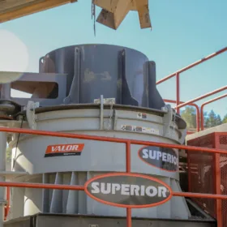
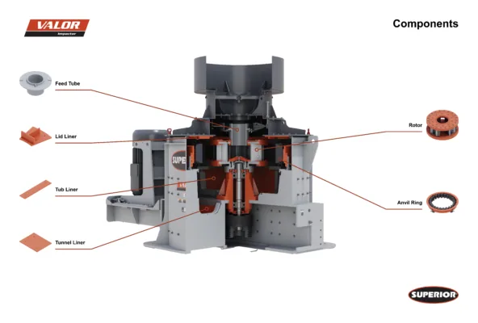
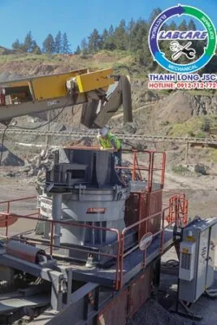
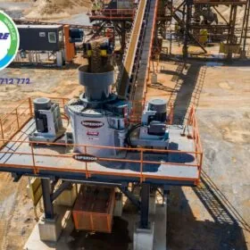
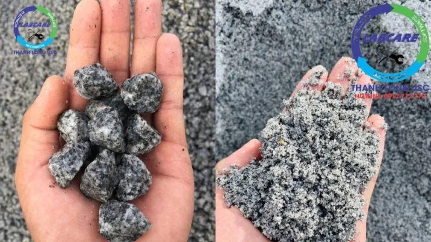

Trong dây chuyền nghiền cát nhân tạo thường có một thiết bị để nghiền nát sản phẩm làm giảm kích thước sản phẩm về nhỏ nhất. Đó là thiết bị máy nghiền cát VSI hay còn gọi là thiết bị sản xuất cát nhân tạo. Thiết bị này được dùng để nghiền các sản phẩm có kích thước lớn thành các hạt nhỏ theo tiêu chuẩn. Các hạt cát sỏi có độ cứng tương đương nhau cũng được máy nghiền cát VSI nghiền nhỏ. Chúng ta cùng đi tìm hiểu nhé.
Máy nghiền cát VSI là gì?
Máy nghiền cát VSI hay còn gọi là máy nghiền cát nhân tạo trục đứng. Là thiết bị chính trong dây chuyền sản xuất cát nhân tạo. Máy nghiền cát VSI còn được gọi là thiết bị làm cát không thể thiếu khi sản xuất cát nhân tạo.

Nguyên lý làm việc của máy nghiền cát VSI
Nguyên lý làm việc của máy là máy nghiền tác động ly tâm (nghiền roto) được phân thành trung tâm thác liệu vào và trung tâm thác liệu vào hoàn toàn.Căn cứ vào độ kháng nén cường lực của nguyên liệu, tính ma sát tiếp xúc, nguyên lý làm việc của máy nghiền roto (nghiền ly tâm) được phân thành hai nguyên lý nghiền “đá va đá” và “đá va đe”.

Máy nghiền cát VSI trục đứng vận dụng chuyển động tốc độ cao của vật liệu và tính chất vật lý tự phá vỡ của vật liệu từ đó mà đạt được tác dụng nghiền. Nguyên lý làm việc của trung tâm thác liệu vào hoàn toàn “đá va đá” tương tự với nguyên lý làm việc của trung tâm thác liệu vào “đá va đe”.
“Đá va đá” thích hợp nghiền những nguyên liệu có độ cứng, như đá bazan, đá granite… vv. Trong quá trình nghiền vật liệu văng ra từ bánh cắt cùng với tấm lót phát sinh tác động xung kích, mà không trực tiếp vào thiết bị kim loại, giảm thiểu hao mòn, từ đó giảm thời gian bảo dưỡng. Nguyên lý làm việc “đá va đá” tạo ra sản phẩm có hình đẹp hơn, lượng bột ít.
“Đá va đe” thích hợp nghiền những nguyên liệu có độ cứng nhỏ như đá vôi… vv. Nguyên lý làm việc “đá va đe” hiệu suất nghiền cao, phí tổn hại tấm bảo vệ cao, tạo ra sản phẩm có hình chất lượng kém hơn.
Đặc điểm máy nghiền cát nhân tạo VSI

– Chất lượng cao hiệu suất cao.
– Áp dụng lắp đặt thủy áp tự động mở lắp, giảm nhân công lao động kiểm tra bảo dưỡng rõ ràng, nâng cao hiệu suất sử dụng.
– Giá máy áp dụng công nghệ mới làm nóng bu-lông, tăng sức chống đỡ và tính dẻo của máy bảo đảm sự ổn định trong khi vận hành của máy.
– Áp dụng lắp đặt thiết bị tiên tiến nhất trên thế giới chống rò ngấm dầu nhẹ, tránh những phiền phức thay thế phong dầu.
Chất lượng, tính năng ưu việt tuổi thọ sử dụng lâu dài.
– Thiết kế máy cho phép chạy 720 giờ liên tục không nghỉ.
– Hình dạng của sản phẩm cuối cùng không thoi dẹt, tránh được sự co ngót, sụt khi đổ bê tông.
– Đạt yêu cầu cao nhất cho các loại bê tông cấu kiện.
– Tốc độ rotor cao, hiệu suất nghiền cao, tỷ lệ nghiền và công suất lớn
– Thiết kế vượt trội và giảm thiểu tối đa lực cản thông qua của vật liệu.
– Tăng từ 30- 60% hiệu suất so với máy nghiền xung kích kiểu cũ.
– Cấu trúc đơn giản, dễ lắp đặt, bảo dưỡng thuận tiện và chi phí vận hành thấp.
– Dầu nhẹ được sử dụng cho hệ thống tuần hoàn bôi trơn, đảm bảo máy luôn mát.
– Lắp đặt toàn bộ hệ thống bảo vệ tự động hoá mớ, dầu lọc máy, hệ thống báo động nhiệt độ ổ đỡ…
– Sử dụng thép chống mài mòn, nâng cao tuổi thọ của máy lên 40%
– Giảm giá thành vận hành xuống 40% so với các hệ máy khác.
– Hệ thống điện, ổ đỡ và động cơ dẫn động được sản xuất bởi các hãng nổi tiếng như CHNT, ZWZ, SIEMENS.

Ưu điểm của cát được sản xuất bằng máy nghiền cát VSI
– Sản phẩm cát đầu ra đạt tiêu chuẩn chất lượng VN.
– Không gây ô nhiễm môi trường, đảm bảo về chất lượng như cát tự nhiên.
– Giảm chi phí thi công, tạo ra những sản phẩm có chất lượng cao.
– Kết cấu bê tông tấm lớn, bê tông mác siêu cao khi dùng cát nhân tạo.
– Thay thế cát tự nhiên nhờ những đặc tính nổi trội như: Hạt đồng đều hơn, tỷ lệ thành phần hạt theo từng yêu cầu cấp phối nhiều loại bê tông khác nhau.
– Tiết kiệm xi măng, nhựa đường, tăng tuổi thọ công trình và rút ngắn thời gian thi công.
– Bê tông xi-măng, bê tông Asphalt, …. nhiều loại bê tông đặc biệt khác đều thích hợp với cát nghiền nhân tạo.
– Không gây ô nhiễm môi trường.
– Có thể lắp đặt tại những nơi gần khu dân cư mà không tạo ra bất cứ ảnh hưởng hay tác động xấu nào.
– Giải quyết nhu cầu dùng cát trong các công trình xây dựng, thủy điện, đập thủy lợi..đều sử dụng cát nghiền từ Thanh Long JSC.
Ứng dụng của máy nghiền VSI

Được sử dụng rộng rãi trong phạm vi lớn, như:
- Sản xuất cát nhân tạo,
- Sản xuất đá xây dựng
- Nghiền quặng trong ngành khai thác khoáng sản,
- Sản xuất sơn, gạch, kính và 1 số ngành công nghiệp khác.
Các đơn vị sản xuất cát nhân tạo đang cần tìm nhà cung cấp thiết bị nghiền, hãy liên hệ với chúng tôi
Hotline: 0972 79 00 58
Nhanh tay liên hệ để nhận được ưu đãi trong dịp cuối năm.